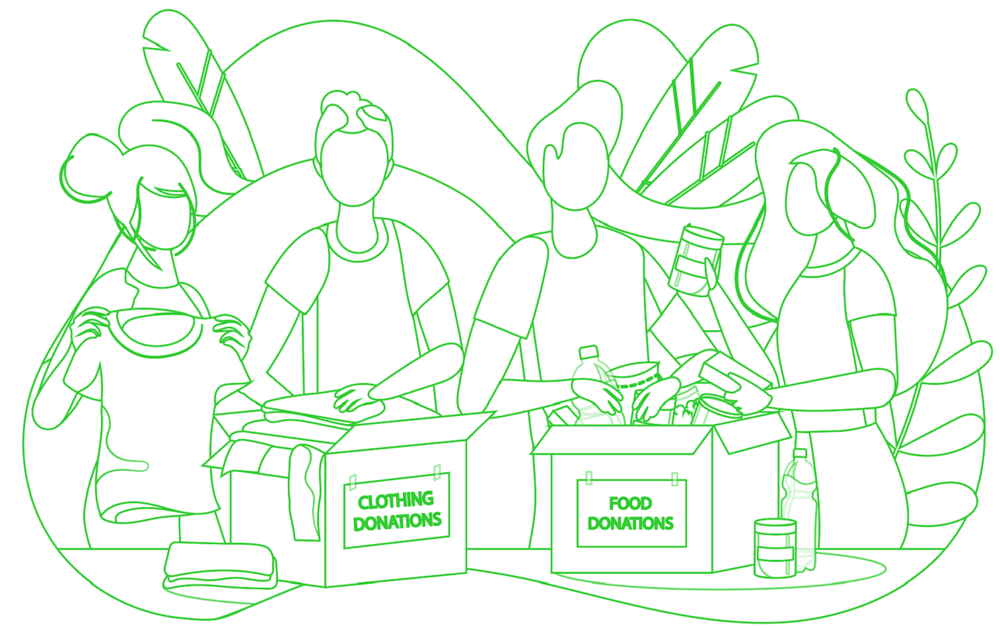

About This Project
This website was created by Esther Agyare-Boateng, Jamie Farrell-More and Sofia
Kakembo.
Together we worked to project manage (using Miro), design (using Figma) and develop
(using several tools including VS Code, CodePen and Github) to create this Front End prototype. This is an
iterative project. We will eventually publish this as a Full Stack website, developed in three Phases:
Phase One

Creating a wireframe and a moodboard using Figma. Once design (font-type, images) is
decided, the building of the website starts - the HTML, CSS and the Javascript of the website.
Phase Two

This will consist of the back-end side of things, this will involve using Python and Flask
as well as using the APIs from the Food Bank and the Open Layer websites. This will allow users to
search locations closest to the postcode entered. The name of the food bank, address and phone number information
will appear. The Open Layer API will be used as a map to pinpoint the locations based on the postcode
entered.
Phase Three
Full Stack Development. This phase is all about linking everything together. Testing and
making sure every element is functioning the way it should.